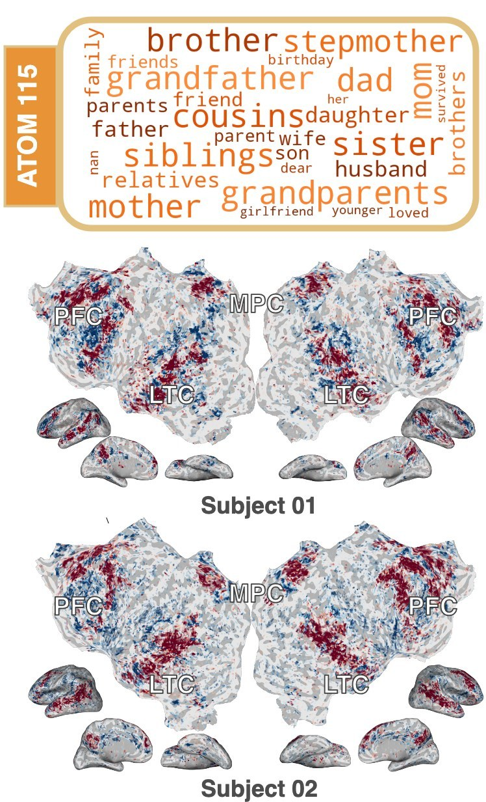
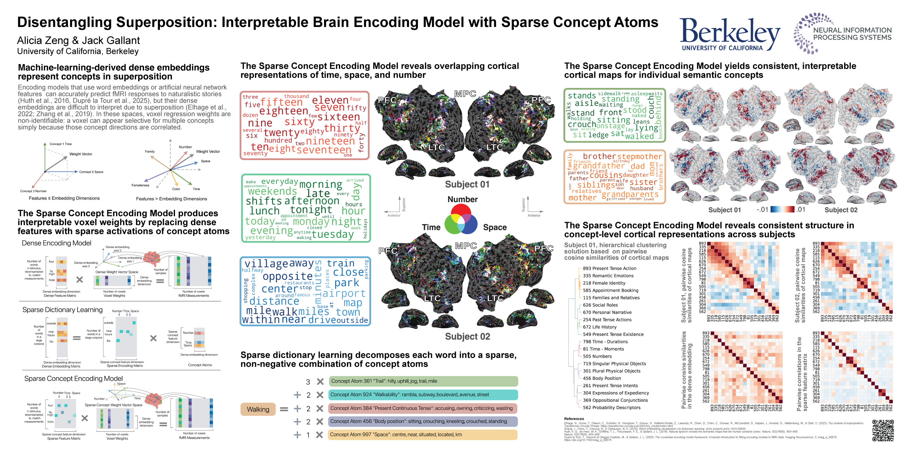

Disentangling Superpositions: Interpretable Brain Encoding Model with Sparse Concept Atoms
The short version
Word embeddings, the lists of numbers that AI systems use to stand for words, predict brain activity well but blur many concepts together. We split one into 1,000 concept atoms, each standing for a single idea, and could then read which concepts each part of the cortex responds to, with no measurable loss in prediction.
The question
When you listen to a story, patches of cortex all over the brain respond to what the words mean. To find out which meanings a patch cares about, neuroscientists fit an encoding model. For every small cube of brain measured by fMRI (a voxel), it learns to predict activity from the words being heard, and its weights should say what that voxel responds to.
We used recordings from seven people who listened to true stories from The Moth Radio Hour in a scanner, collected by Huth and colleagues (2016).
The obstacle: more concepts than dimensions
The best predictors of brain activity come from machine learning. A word embedding such as GloVe gives every word a few hundred numbers, learned from which words appear together in text. Language holds far more concepts than that, so in an embedding the concepts have to share directions. AI researchers call this superposition.
Shared directions make the weights ambiguous. If number and time point in similar directions, a voxel that responds only to numbers gets a weight that also points toward time, and the model cannot say which of the two the voxel cares about.
A voxel that responds only to number. Read from the embedding, its weights also point toward time and space. Read from concept atoms, only number lights up.
The idea: give every concept its own axis
A method called sparse coding, first proposed as a model of how visual cortex represents images (Olshausen and Field, 1996), rewrites each item as the sum of a few ingredients drawn from a larger set. We applied it to the GloVe embedding and learned 1,000 ingredients, which we call concept atoms. Each atom is one direction, and each word is built from only a handful of them.
walking is made of
- 3 × trail hilly, uphill, jog, trail, mile
- 2 × walkability rambla, subway, boulevard, avenue, street
- 2 × present continuous tense accusing, owning, criticizing, wasting
- 2 × body position sitting, crouching, kneeling, crouched, standing
- 1 × space centre, near, situated, located, km
We then fit the same encoding model on the atoms in place of the original embedding. Across the seven listeners it predicted brain activity about as well as the original model (we found no measurable difference), and every weight now belongs to a single concept, so a voxel’s preferences can be read off directly.
What we found
Each concept has its own map, and the maps agree between people
Plotting one atom’s weight in every voxel gives a map of where that concept matters. The family atom, driven by words such as sister, cousins and grandparents, gives a pattern spread across both hemispheres that looks much the same in two different people. Maps made from the original embedding were patchier and agreed less from person to person.


Time, space and number share some of the same cortex
Separate axes let us test an old idea in psychology: that the brain judges how many, how far and how long with one shared magnitude system (Walsh, 2003). Behavioral studies support it, and brain-imaging results have been mixed. We mapped a number atom, a time atom and a space atom in each listener and laid the three maps over one another. All three meet in the intraparietal sulcus and the inferior frontal gyrus, on both sides of the brain, regions that earlier work on magnitude has pointed to.

A follow-up with more listeners asks how far that sharing goes. Number, space and time have their own page
Why it matters
Stories are a natural way to study language in the brain, but nothing in a story is controlled. Sparse coding separates the concepts after the fact, as a controlled experiment would have, so a model built from AI features can answer specific questions about the brain. The atoms here come from word vectors that ignore context; the 2026 follow-up learns its components from language-model features and brain recordings together.
The talk
Five minutes at NeurIPS 2025, telling the same story. This is my own recording; the conference copy is on SlidesLive, which cannot be embedded here.
Transcript of the talk
We use interpretable AI models to understand how the brain represents abstract ideas — like time, space, and number. Let’s start with the basic tool behind this work: fMRI voxelwise encoding models. fMRI, or functional Magnetic Resonance Imaging, measures tiny changes in blood oxygenation levels across the brain. Every second or so, we simultaneously record signals from tens of thousands of small brain volumes, called voxels. To visualize the complex data, we computationally inflate and flatten the cerebral cortex into a 2D map. Anything you perceive in the story — whether it’s a sound, a word, or even a fleeting emotion or memory — should leave a trace somewhere in the brain’s activity patterns.
The purpose of an encoding model is to learn a mapping between what’s happening in the stimulus, and how the brain responds. Mathematically, we describe this using two matrices: X, which represents the features of the stimulus, and Y, the measured brain responses. We then fit a model — typically regularized linear regression — to predict Y from X. And we do this separately for each voxel. That’s what makes it voxelwise. When the model is trained, every voxel ends up with a weight vector — an arrow pointing through the feature space, telling us which features that voxel cares about.
The hardest part of building an encoding model is turning something as rich as a story into numbers. A major leap in prediction performance came when researchers began using features from machine learning, like word embeddings or activations from large language models. But we end up explaining one black box with another. The loss of interpretability comes partly from a phenomenon called superposition. Neural networks have to represent millions of concepts using only limited dimensions, so each concept is encoded as a linear combination of shared directions. In this feature space, concepts like time and number can be correlated, so a weight vector that points toward “number” will also point toward “time.”
This isn’t just theoretical — it shows up in real data. On this cortical flatmap, some regions respond to time, number, and space words all at once. But we can’t tell whether that overlap reflects a shared neural code or just correlations in the embedding space.
So how might we start to untangle this? Superposition happens when too many features are crammed into too few dimensions. To address that, we need to unpack them — to recover the hidden semantic directions and give each one its own coordinate. In other words, we expand the feature space into a higher-dimensional one, where different concepts can be separated cleanly. Each word then becomes a weighted mix of just a few of these latent directions. This works because of one key assumption: sparsity. Most words connect to only a few underlying concepts, so we expect most entries in this new representation to be zero. This standard approach is known as sparse coding. The result is a new, more interpretable representation of the stimulus — a sparse activation matrix.
Now that we have this new sparse representation, we can plug it back into the fMRI encoding model. Before, we used dense embeddings directly in a linear regression. Now, we replace them with these sparse features. Each voxel’s weight vector now lives in an interpretable space, where every axis corresponds to a distinct concept. That means we can read out what each voxel selects for directly, and map those patterns across the cortex.
Now we can return to the question we started with: where in the brain are time, space, and number represented? This isn’t just a fun example. It also tests a long-standing idea in psychology: that these three concepts may share a common magnitude system in the brain. To explore that, we identify the concept atoms for time, space, and number and create cortical maps showing where each is represented. For each subject, we layer the three maps together to reveal their overlap.
White areas show the three-way overlap, highlighting voxels that respond to all three concepts. What we find is intriguing. There is bilateral overlap in regions such as the intraparietal sulcus and the inferior frontal gyrus, a pattern consistent with the idea of a shared magnitude system. By unpacking these dense representations, we are beginning to see how abstract ideas like time, space, and number are organized across the brain. If you would like to learn more, please check out our NeurIPS paper.
For the details
The paper shows why weights on a dense embedding cannot be uniquely interpreted, compares the two models voxel by voxel, and adds a second analysis of how the maps of common concepts relate to one another. It is on OpenReview; chapter 2 of my thesis is the same paper with its supplementary material, and the code is on GitHub.


Abstract
Encoding models using word embeddings or artificial neural network (ANN) features reliably predict brain responses to naturalistic stimuli, yet interpreting these models remains challenging. A central limitation is superposition: distinct semantic features become entangled along correlated directions in dense embeddings when latent features outnumber embedding dimensions. This entanglement renders regression weights non-identifiable—different combinations of semantic directions can produce identical predictions, precluding principled interpretation of voxel selectivity. To address this, we introduce the Sparse Concept Encoding Model, which transforms dense embeddings into a higher-dimensional, sparse, non-negative space of learned concept atoms. This transformation yields an axis-aligned semantic basis where each dimension corresponds to an interpretable concept, enabling direct readout of conceptual selectivity from voxel weights. When applied to fMRI data collected during story listening, our model matches the prediction performance of conventional dense models while substantially enhancing interpretability. It enables novel neuroscientific analyses such as disentangling overlapping cortical representations of time, space, and number, and revealing structured similarity among distributed conceptual maps. This framework offers a scalable and interpretable bridge between ANN-derived features and human conceptual representations in the brain.
BibTeX
@inproceedings{zeng2025disentangling,
title = {Disentangling Superpositions: Interpretable Brain Encoding Model
with Sparse Concept Atoms},
author = {Zeng, Alicia and Gallant, Jack},
booktitle = {Advances in Neural Information Processing Systems},
year = {2025},
url = {https://openreview.net/forum?id=3aNvX9TQTo}
}